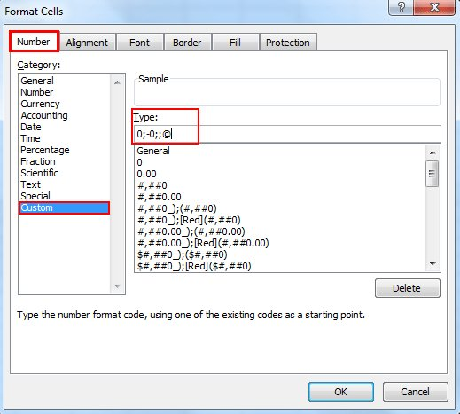

December 2017
Interesting also with @awscloud's #Neptun graph db (RDF/#SPARQL or property graph/Gremlin) aws.amazon.com/blogs/aws/amaz… twitter.com/ericaxel/statu…
Q: How To Display Or Hide Zero Values In Cells In Microsoft Excel? A: Format Cells, Click Number tab and select Custom, then type 0;-0;;@ in the Type box extendoffice.com/documents/exce…

Interesting mix of topics: #Blockchain #Kafka #ML #ReactJS #GDPR #microservices twitter.com/callistaent/st…
I met @futuramb in the late 80:ies and learned about Linux, Apple and Hypercard. A few years later Martin pointed me to WWW and Christian Forsäng gave me the opportunity to lead the Volvo Web Wave project. twitter.com/anildash/statu…
Yes, I see myself in this. Time for me to take the time to follow “How to Learn Pandas” by @TedPetrou medium.com/dunder-data/ho…
"we need to move away from reliance on remote, centrally provided data access systems. GSK now provides encrypted data directly to researchers." twitter.com/mpip_initiativ…